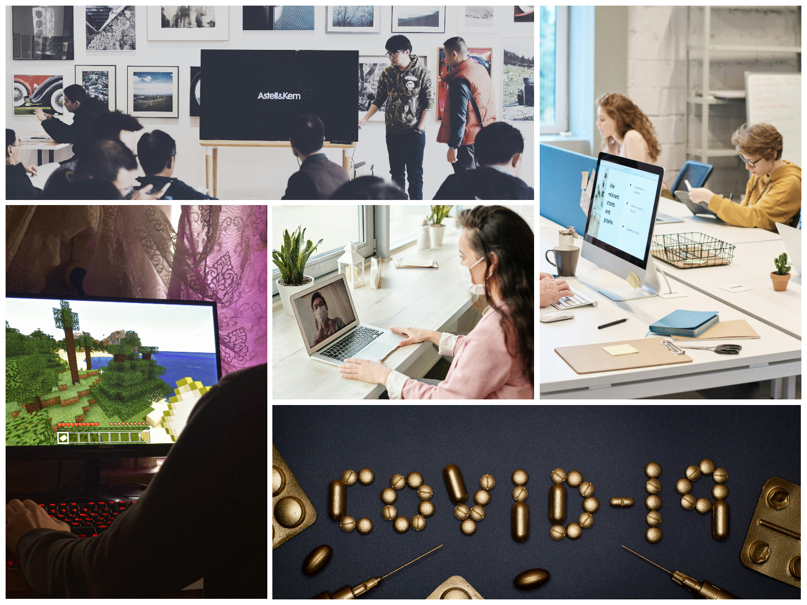

Gāja gadi, un tehnoloģijas vairs nebija nekas īpašs. Mēs pildījām uzdevumus vietnē Uzdevumi.lv, veidojām prezentācijas un par jaunumiem uzzinājām klases WhatsApp grupā. Ļoti jautri gāja informātikas stundās, kur dekorējām tekstu MS Word un apstrādājām attēlus (sarkasms). Visā šajā posmā es joprojām interesējos par jaunākajām tehnoloģijām, paspēlēju kādu spēli datorā vai telefonā, bet kopumā šis periods pagāja diez gan mierīgi. Kad biju sasniedzis vidusskolu, pienāca Covid-19. Šis periods radikāli mainīja pasauli, jo pēkšņi viss bija attālināti, un bez tehnoloģijām šis periods nebūtu iedomājams. Daudzi paradumi joprojām ir atstājuši nospiedumu mūsu ikdienās.
